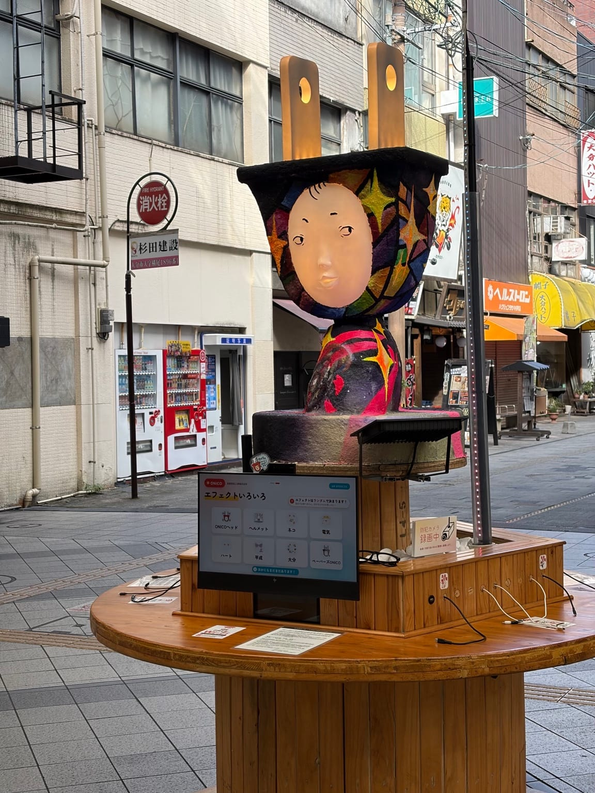
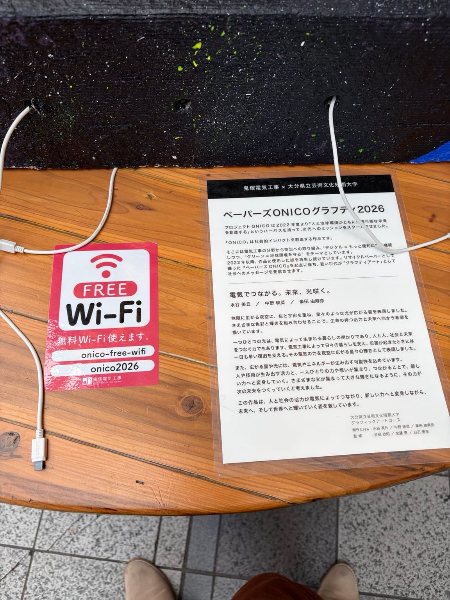

通勤途中によく通るガレリア竹町で、携帯電話の充電と無料Wi-Fiが利用できるスポットを見つけました。

大きなコンセントのような形と、色鮮やかなアートが目を引きます。近づいてみると、テーブルの上には充電用のケーブルが並び、「FREE Wi-Fi」の案内もありました。
「これは、なかなか良い試みだな」と思ったので、今回はこの街なかの充電スポットをご紹介します。
調べてみると、これは鬼塚電気工事株式会社と大分県立芸術文化短期大学などが協働する「プロジェクトONICO」の取り組み。2018年から続いており、ガレリア竹町やJR大分駅前などで充電ステーションを展開してきたそうです。[1]
現地の案内には「ペーパーズONICOグラフティ2026」とあり、リサイクルした紙を活用したアート作品とのこと。地元の学生さんたちの発想が、街の便利さやにぎわいにつながっているのも素敵ですね。

外出先でスマホの充電が少なくなると、連絡や地図、キャッシュレス決済が使えるか気になりますよね。買い物の合間や待ち合わせのときに、充電できる場所があるのは助かると思います。無料Wi-Fiも利用できるのは、街を訪れる方にとってもうれしいサービスです。
また、このプロジェクトには、災害時の携帯電話の充電を支えるという防災の視点もあります。[2] 普段から身近な充電スポットの場所を知っておくことが、いざというときの備えにもつながりそうです。
ガレリア竹町には大きなクリスマスツリーも飾られていて、少しずつ冬らしい雰囲気になってきました。街歩きやお買い物で訪れた際は、こうした取り組みにも目を向けてみてはいかがでしょうか。
スマホを修理する仕事をしていると、電池が切れて使えなくなる不便さは、とても身近に感じます。便利な充電スポットとあわせて、日頃のバッテリーの状態も気に掛けておきたいですね。
「最近、充電の減りが早い」「外出先で電池が持たない」といったお悩みがありましたら、大分市都町のRepair540へお気軽にご相談ください。
※設置期間や利用できる機能、充電端子などは、現地の案内をご確認ください。